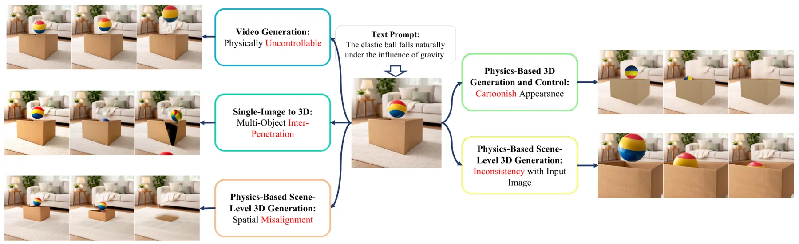
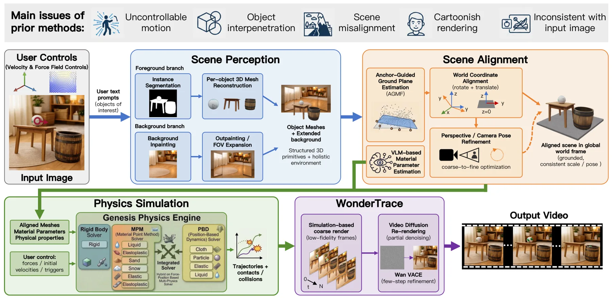
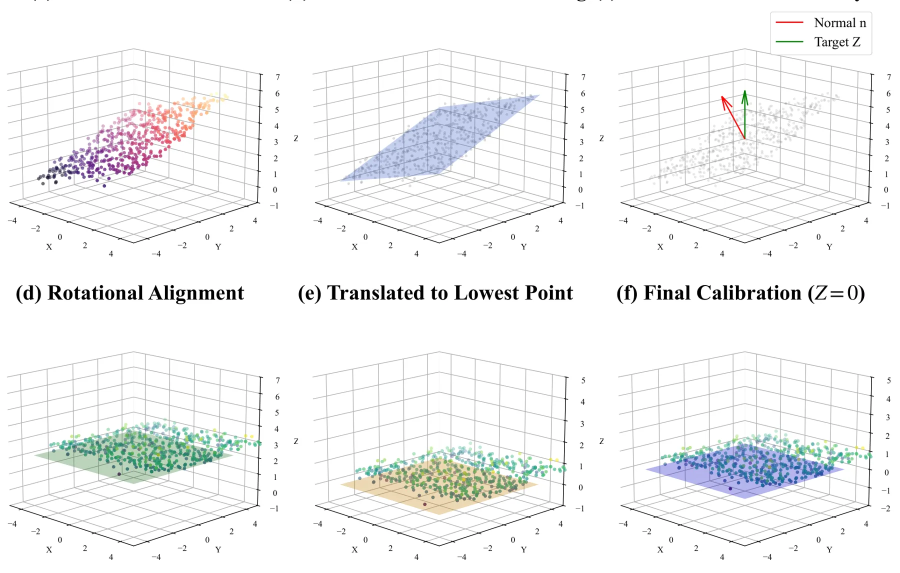
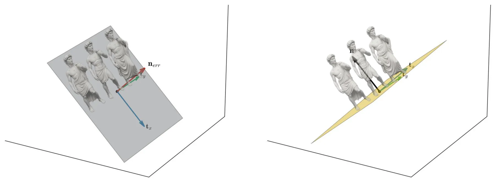
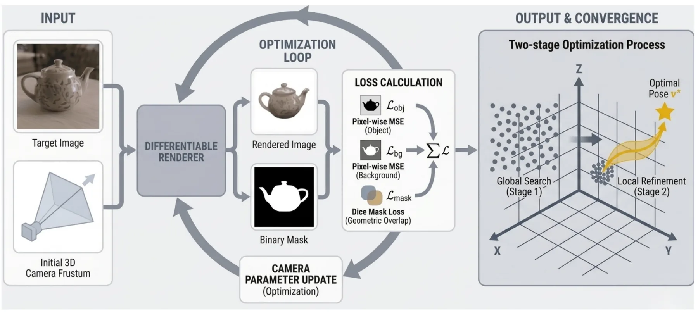

PhysOmni：从单图生成物理一致且可实时交互的多物体场景PhysOmni: Physics-Grounded Multi-Object Scene Generation from a Single Image with Real-Time Interaction
统一场景坐标与物体交互约束对单图场景重建有启发；结果依赖生成先验，不能等同测量级几何，且此次为 replace 更新。
一句话工作总结
通过统一坐标系中的整体三维重建和仿真—渲染解耦，从单图生成可实时操控的多物体场景。
摘要
PhysOmni 是 training-free 的单图到物理可控视频框架，核心是先进行整体场景级三维重建，并将全部物体几何放入统一空间坐标系，以减少物体穿透和空间错位。该表示支持场景级多物体交互和更复杂的力学控制；通过将 simulation 与 rendering 解耦，系统可实时预览物理交互，再生成保持输入外观的写实视频。摘要称其在物理保真度、空间一致性和可控性方面优于已有方法。
Recent generative video models achieve impressive visual quality but remain constrained by limited physical consistency and controllability. Existing video generation methods provide minimal physical control, and single-image-to-3D conversion approaches often suffer from object interpenetration. Furthermore, physics-based scene-level 3D generation methods exhibit spatial misalignment, stylized artifacts, and inconsistencies with the input data, restricting their use in realistic interactive video synthesis. We propose PhysOmni, a training-free framework that converts a single image into a physically consistent and controllable video through holistic scene-level 3D reconstruction. By rep?resenting the full scene geometry in a unified spatial coordinate system, PhysOmni resolves object penetration and alignment ambiguity. Unlike prior methods, this formulation enables accurate scene?level multi-object interactions and introduces richer, complex control types for advanced mechanics?based manipulation. By decoupling simulation from rendering, PhysOmni bypasses latency-heavy priors, achieving real-time physical interaction previews paired while preserving photorealistic visual fidelity. Experimental results demonstrate that PhysOmni substantially outperforms prior methods in physical fidelity, spatial coherence, and controllability. Project Page: https://physomni.github.io/
中文解读摘录
- 作者：Xin Zhang, Yabo Chen, Yijie Fang, Wanying Qu, Haibin Huang, Chi Zhang, Feng Xu, Xuelong Li
- 价值判断：用统一空间坐标系中的整体场景级三维重建减少物体穿透和对齐歧义，再将 simulation 与 rendering 解耦，提供实时物理交互预览和写实生成结果。
- 结果与边界：摘要称物理保真度、空间一致性与可控性优于现有方法；但不可见区域和几何依赖生成先验，不应当作测量级 reconstruction。本条为 arXiv replace 更新，但本地索引首次收录，符合
is_new=true规则。 - 链接：arXiv · PDF · 项目页
图表/页面预览

{kind=link}

{kind=link}

{kind=link}

{kind=link}

{kind=link}
